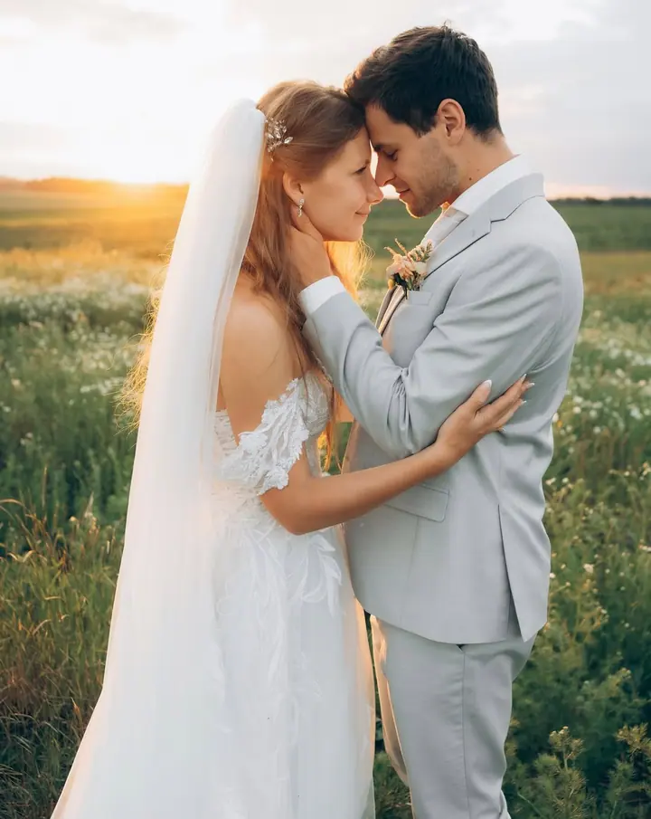
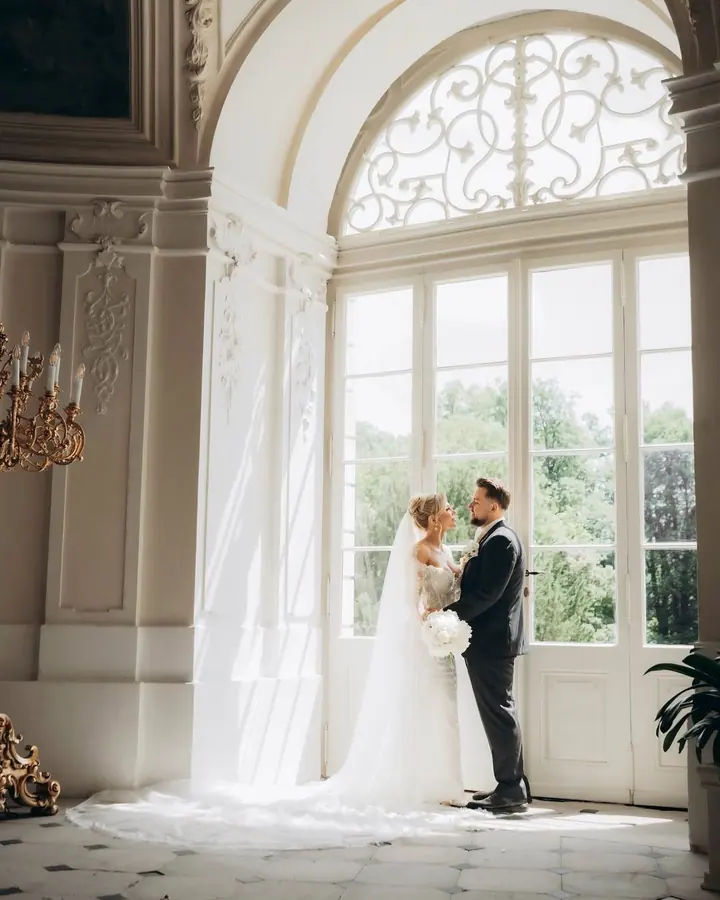
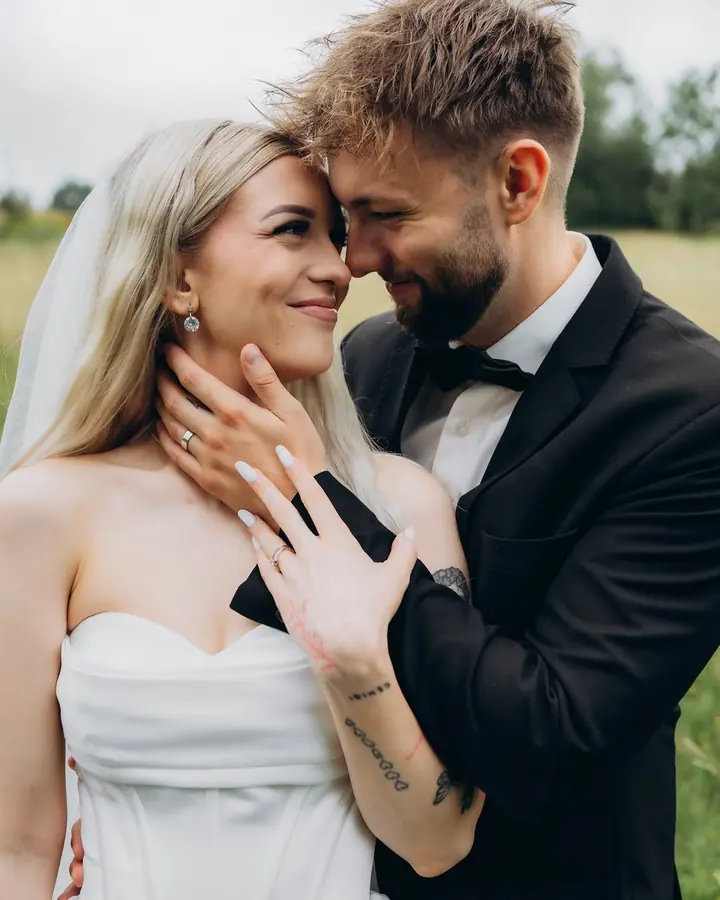

jedna
Svatby
Fotím celý svatební den v balíčku na 8 nebo 12 hodin a předávám všechny povedené fotky. Snažím se zachytit přirozené momenty z povzdálí, aby o mně svatebčané věděli co nejméně.


Jmenuji se Dominika Kadlecová a v České Lípě a okolí fotím svatby, páry a rodiny s nejmenšími. Ráda zachycuji přirozené momenty a emoce, které vyprávějí skutečné příběhy. Při focení mi nejvíc záleží na tom, abyste se cítili pohodlně a byli sami sebou.
Více o mně
Co fotím
jedna
Fotím celý svatební den v balíčku na 8 nebo 12 hodin a předávám všechny povedené fotky. Snažím se zachytit přirozené momenty z povzdálí, aby o mně svatebčané věděli co nejméně.
dvě
Klidné focení v přírodě nebo v ateliéru, kde je čas na vás dva a na bříško. Záleží mi na tom, abyste se cítili pohodlně a sami sebou.
tři
Fotím rodiny i úplně nové miminko, v ateliéru nebo venku. Ráda zachycuji obyčejnou něhu, která vypráví váš skutečný příběh.
Focení ve dvou, často při západu slunce u vody nebo v poli. Žádné strnulé pózy, hlavně přirozené emoce.
Přirozené momenty, které vyprávějí váš příběh
Za objektivem
Pocházím z České Lípy. Mým hlavním povoláním je koordinátorka instalací ve firmě Lasvit, ale focení je pro mě nejen druhá práce, hlavně je to vášeň. Věnuji se především svatební a rodinné fotografii a ve volném čase fotím fotbalové zápasy, hlavně pro klub FK Arsenal Česká Lípa.
Fotím na Sony A7 III a A7 IV, takže mám na každém těle jiný objektiv a nemusím je během dne měnit. Nejčastěji sahám po pevných sklech 35 mm a 50 mm. Na svatbách využívám i Tamron 70–300 mm, se kterým zachytím přirozené chvíle z povzdálí, aniž by o mně hosté věděli.
Když nefotím, cestuji, chodím po horách a ráda pozoruji západy slunce. Nejraději se vracím do Itálie, a protože jsem celiačka, oceňuji, že tam mají největší výběr bezlepkových těstovin a pizzy.
Dominika
Ozvěte se přes formulář nebo e-mailem a dejte mi vědět, o jaké focení máte zájem a kdy. Ráda vám odpovím a domluvíme podrobnosti.
Před svatbou se potkáme osobně nebo online, probereme harmonogram, místa a vaše přání. U ostatních focení stačí krátká domluva.
Fotím nenápadně a s klidem, abyste se cítili sami sebou. Na svatbě zachycuji hodně momentů z povzdálí.
Odevzdávám všechny povedené fotky ve vlastní online galerii. U svatebních balíčků dostanete i dárkové balení s tištěnými fotkami a USB.
Portfolio
Otázky
Balíček Standard (8 hodin) stojí 15 000 Kč, celodenní balíček (12 hodin) 19 000 Kč. Každá další hodina je za 1 500 Kč.
U balíčku Standard minimálně 500 upravených fotek, u celodenního minimálně 700. Odevzdávám všechny povedené, k tomu 30, případně 50 fotek v tištěné podobě a vše na USB.
Ano. Doprava do 20 km od České Lípy je zdarma, každý další kilometr účtuji 10 Kč.
Fotím v ateliéru i venku v přírodě, podle toho, co je vám bližší a jaké je roční období. Místo spolu vybereme předem.
Napište pár vět o tom, co si představujete. domi.kadlecova@seznam.cz